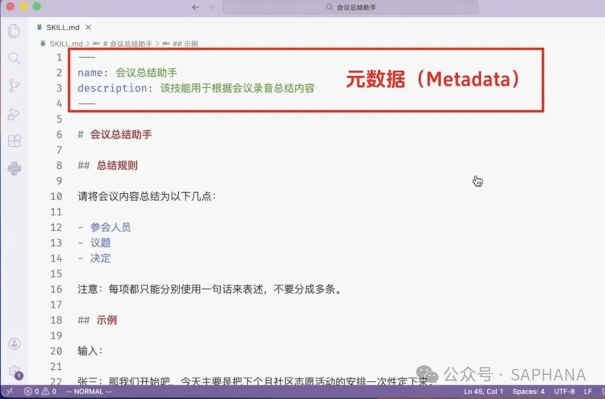
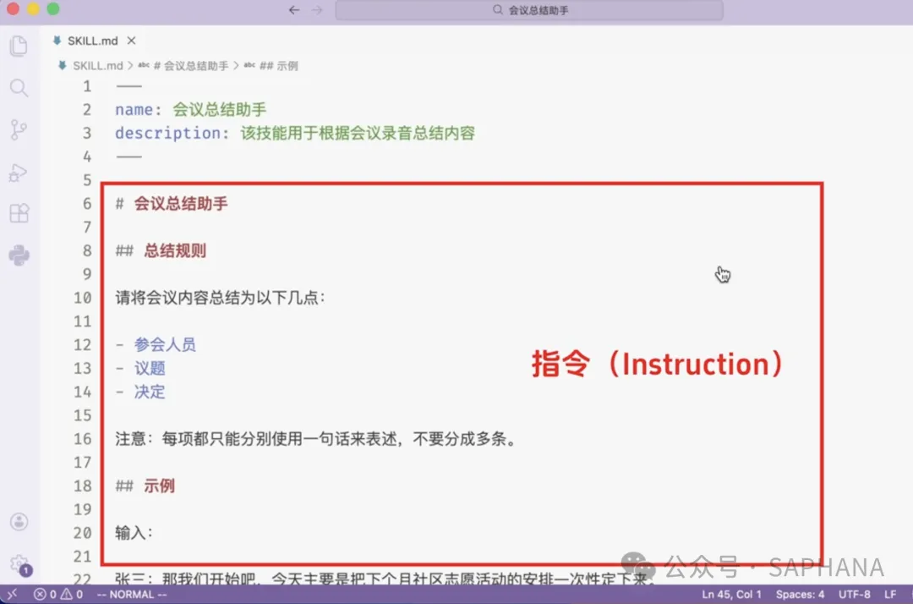
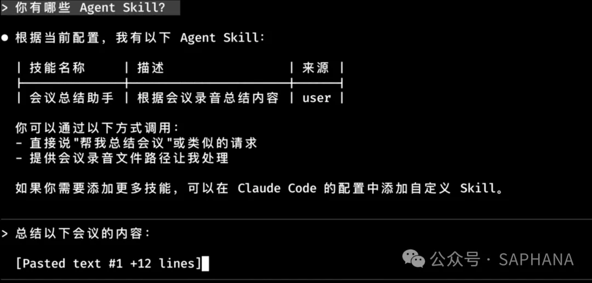
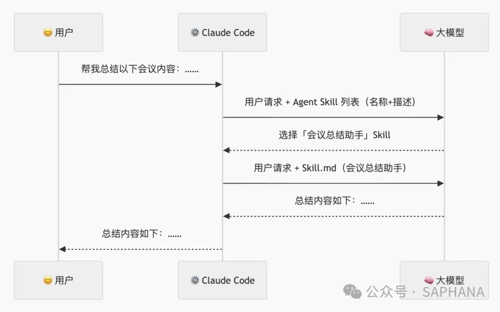
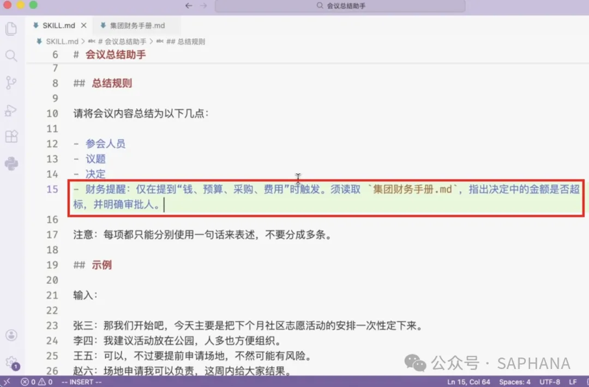
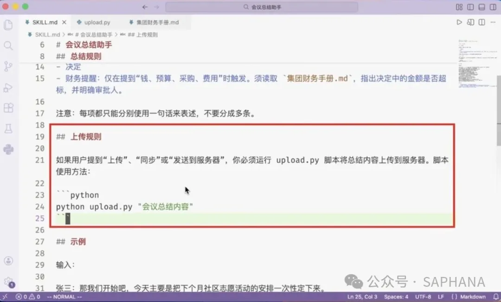
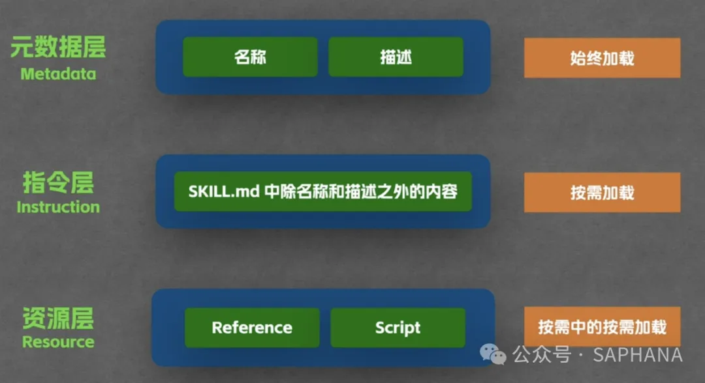
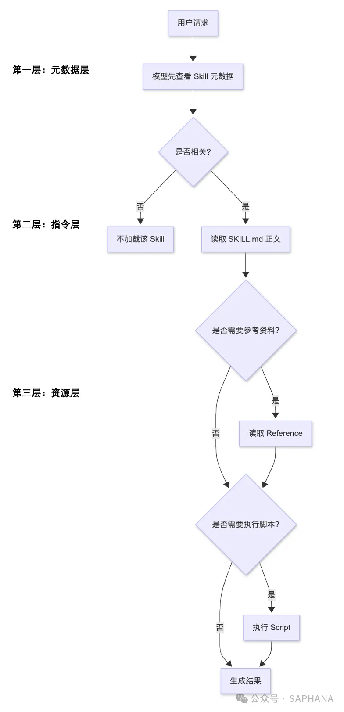

定义、目录结构、原理与实战思路 —— 从概念、用法、原理到边界一次讲清
Skill 的本质不是"更高级的提示词"，而是面向 Agent 的能力封装
很多人第一次接触 Agent Skill 都会觉得"这不就是把 prompt 存起来吗？"搞清楚之后你会发现，它其实是 AI Agent 时代非常重要的一种能力封装方式。
| 概念 | 类比 | 作用 |
|---|---|---|
| Prompt | 临时口头交代一句话 | 一次性指令 |
| Skill | 给新同事的一份岗位 SOP | 可复用方法论 |
| MCP | 把同事接入 ERP / CRM / 数据库 / 工单系统 | 外部系统连接 |
| Subagent | 再配几个分工明确的专业助手 | 任务分工 |
看完这篇文章，你会明白 8 件事：
它是"说明文档"，但不只是说明文档
很多入门讲法会说：Agent Skill 就是一个大模型可以随时翻阅的说明文档。这个说法没错，也很好懂。
这样你就不用每次都重新粘贴一大段提示词了。
SKILL.md，还可以带上参考资料、脚本、模板、资源文件。Anthropic 官方明确说明：Skill 是以文件夹形式组织的能力包。
my-agent-skill/
├── SKILL.md
├── references/
│ ├── finance-policy.md
│ ├── meeting-template.md
│ └── product-guide.md
├── scripts/
│ ├── upload.py
│ ├── summarize.py
│ └── validate.sh
└── assets/
├── example-input.txt
└── example-output.md
| 目录 / 文件 | 作用 |
|---|---|
SKILL.md | 核心入口，定义 Skill 的名称、描述、规则、步骤与触发条件 |
references/ | 放参考资料，供模型在特定场景下按需读取 |
scripts/ | 放可执行脚本，供模型在需要时触发执行 |
assets/ | 放示例、模板、样例输入输出，帮助模型更稳定地理解任务 |
Skill 解决的，不是模型"不会说"，而是模型"不会稳定地按你的方式做"。
真实工作里，最麻烦的并不是让模型回答一个问题，而是让它：
它把"方法论"和"组织知识"从零散 prompt，升级成了可复用能力。
最小可用结构、SKILL.md 组成与一个完整例子
在 Claude Code 文档中，Skill 的基本形式是一个目录，核心文件是 SKILL.md。Claude 会在相关请求中自动使用 Skill，也可以通过命令直接调用。
~/.claude/skills/
└── 会议总结助手
└── SKILL.md
把 Skill 放在相应的 skills 目录下管理，Claude 会将其纳入工具箱，并在请求相关时自动使用。
一个典型的 SKILL.md 通常包含两部分：元数据 + 正文指令。


正文里还可以补充：输出格式、风格要求、错误处理、禁止事项、示例输入输出。
假设你想做一个"会议总结助手"，那么这个 Skill 的目标就不是"帮我总结"，而是更具体：
输入：会议录音转写文本 输出：参会人员、议题、结论、待办事项 风格：简洁、商务化 规则：不能臆造缺失信息
SKILL.md 写法：
--- name: 会议总结助手 description: 该技能用于根据会议录音总结内容 --- # 会议总结助手 ## 总结规则 请将会议内容总结为以下几点： - 参会人员 - 议题 - 决定 注意：每项都只能分别使用一句话来表述，不要分成多条。 ## 示例 输入： 张三：那我们开始吧，今天主要是把下个月社区志愿活动的安排一次性定下来。 李四：我建议活动放在公园，人多也方便组织。 王五：可以，不过要提前申请场地，不然可能有风险。 ... 输出： - 参会人员：张三、李四、王五、赵六、孙七 - 议题：统一确定下个月社区志愿活动的地点、时间、人数、预算及分工安排。 - 决定：活动定在公园并于周六上午九点举行，按约 50 人规模和 1000 预算执行...
为什么 Skill 能"省 Token"？本质是分层加载
很多人会用 Skill，但不知道它为什么"省 Token"。本质上，Skill 不是把所有内容一上来全塞给模型，而是分层加载。
即：一开始给模型看的，通常只是 Skill 的名称和描述；只有模型判断相关时，才会继续读取完整的 SKILL.md。


SKILL.md 正文解决"要不要读资料"的问题
Reference 可以理解为：这个 Skill 在特定条件下，才会去读取的参考材料。
它可能是：财务制度、法务条款、品牌规范、会议模板、产品手册、项目实施说明、API 说明文档。
这些内容不一定适合全塞进 SKILL.md，因为太长、太杂，而且很多时候根本用不上。所以更合理的做法是：
SKILL.md 里先写清楚触发条件这就是"按需中的按需"。

假设你做的是"会议总结 Skill"，但你希望它在涉及预算、采购、报销时，顺带做合规提醒。这时你当然可以直接把财务制度全文塞进 SKILL.md。
问题是：
集团财务手册.md → 根据里面的规则判断是否超标 → 标出审批要求或风险提示。这里一定要抓住一个关键词：Reference 的动作是"读"。
Reference 文件内容会被读取，进入模型的上下文，成为回答依据的一部分。因此它会消耗 Token。
解决"要不要直接动手干活"的问题
如果说 Reference 解决的是"要不要读资料"，那么 Script 解决的就是：要不要直接动手干活。
Script 就是 Skill 目录中的可执行脚本，例如 upload.py。你可以在 Skill 里定义：

还是会议总结场景。你可以在 Skill 里规定：
upload.py，把总结结果上传到指定服务upload.py 示例：
import sys
import time
def upload_summary(content):
print("\n[System] 启动上传程序...")
time.sleep(0.5)
print("[System] 正在连接公司内部服务器 (https://api.internal.wiki)...")
time.sleep(1.2)
print(f"[System] 正在上传总结内容（字符数：{len(content)}）...")
time.sleep(1.0)
print("✅ 上传成功！")
print(f"📄 文档已保存至: /meetings/2024/summary_{int(time.time())}.md")
if __name__ == "__main__":
if len(sys.argv) > 1:
upload_summary(sys.argv[1])
else:
print("❌ 错误：未接收到总结内容。")
Reference 是"读"，Script 是"跑"。这两者的差异非常重要。
Script 的核心不是把代码读进上下文，而是执行它，并利用执行结果继续完成任务。
这也是为什么 Skill 对自动化很有吸引力：
理解 Skill 原理时最值得单独讲的一部分
简单讲就是：不是一上来把所有东西都给模型，而是按层级、按相关性、按需要逐步揭示。

主要是 Skill 名称、Skill 描述，可能还有一些轻量级控制信息。作用是让模型先建立"可选能力目录"。这一层通常体量最小，但非常重要 —— 因为模型就是靠它判断："这个请求是不是应该用某个 Skill 来处理？"
也就是 SKILL.md 正文。只有当模型判断某个 Skill 和当前请求相关时，才会进入这一层。这层通常包括：任务目标、规则约束、输出格式、示例、触发条件、对 Resource 的调用说明。解决的是：模型知道自己该怎么做。
包括 Reference、Script，以及 Anthropic 文档中提到的模板、资源文件等内容。官方概览页明确指出，Skill 可以打包 instructions、metadata 和 optional resources（例如 scripts、templates）。解决的是：模型在真正执行某类任务时，需要进一步参考什么、调用什么。

因为它同时解决了 AI Agent 落地时的两个老问题：
| 问题 | 说明 |
|---|---|
| 问题一：上下文不够用 | 如果你把所有规则、所有知识、所有案例、所有脚本说明一股脑扔进去，模型上下文很快就会变脏、变贵、变乱。 |
| 问题二：能力不稳定 | 如果你每次都靠临时 prompt 去提醒模型，它很容易在不同轮次、不同任务里漂移。 |
最容易被问到、也最容易答偏的一个问题
解决的是接入问题
擅长：取数据、查系统、调服务、操作工具
解决的是处理问题
擅长：固化流程、格式、规范、最佳实践，编排轻量执行逻辑
很多人会说："Skill 里也能写脚本，那我直接在 Skill 里把取数逻辑也写了，不就不用 MCP 了吗？"
功能上，确实可能"能做"。但工程上，未必"适合做"。
| 差异 | MCP | Skill |
|---|---|---|
| 职责不同 | 连接层 | 能力 / 规则层 |
| 维护性不同 | 系统接入、认证、权限、稳定性，更适合 MCP 管 | 流程规则、输出方法、场景编排，更适合 Skill 管 |
| 复用性不同 | 一个 MCP 服务可以被多个 Skill 共用 | 一个 Skill 可以建立在多个 MCP 之上 |
| 安全边界不同 | 访问权限、调用审计、执行边界，更适合在 MCP 层管理 | 不宜散落在各个 Skill 里 |
把 Skill 当成"AI 的岗位 SOP"
如果前面的概念还觉得抽象，建议直接用这个心智模型：
这样一来，你就能快速判断什么适合做成 Skill：
企业场景（SAP、ITSM、财务分析、项目管理、研发协作）的三类 Skill
| Skill 类型 | 范例 | 重点 |
|---|---|---|
| 文档型 |
会议纪要助手 周报 / 月报助手 设计书审查助手 Ticket 影响调查助手 根因分析助手 |
固定输出框架 固定审查维度 固定措辞要求 必要时调用 Reference |
| 规范型 |
财务合规检查 法务条款风险提示 品牌文案规范检查 安全编码规范检查 |
SKILL.md 写出触发条件 规则正文尽量精炼 大块制度文档下沉到 Reference |
| 自动化型 |
生成并上传日报 分析日志后调用脚本归档 整理报表后发送到指定目录 根据输入参数触发本地检查程序 |
把脚本调用规范写清楚 输入输出格式写清楚 错误处理写清楚 不要把系统集成复杂度全塞给 Skill |
五条经过验证的经验
| No. | 建议 | 说明 |
|---|---|---|
| 1 | description 一定要写具体 | 不要只写"帮助用户完成工作"。因为 description 越具体，模型越容易在第一层就正确匹配。 |
| 2 | SKILL.md 不要写成散文 | 最好结构化：目标 / 触发条件 / 步骤 / 输出格式 / 禁止事项 / 示例 |
| 3 | 把重知识放进 Reference | 不要把所有制度、手册全文塞进正文。正文只写：何时触发 / 触发后读哪个文件 / 读取后怎么用 |
| 4 | 把重逻辑放进 Script 或外部工具 | 不要让模型在 prompt 里模拟复杂程序逻辑。能程序做的，让程序做。 |
| 5 | Skill 不是越大越好 | 一个 Skill 最好职责明确。与其做一个"万能办公助手"，不如拆成：会议总结 Skill / 财务审查 Skill / 上传归档 Skill。这样匹配更准，也更容易维护。 |
本质、机制与三者关系
它至少做了三件事：
这使得它既能复用知识，又不会把上下文一股脑塞爆。
文章中的关键概念
| 术语 | 解释 |
|---|---|
| Agent Skill | 面向 Agent 的能力封装单元，以文件夹形式组织，核心是 SKILL.md |
| SKILL.md | Skill 的核心入口，定义名称、描述、规则、步骤与触发条件 |
| 元数据（Metadata） | SKILL.md 的 frontmatter 部分（name / description），始终加载 |
| 指令（Instruction） | SKILL.md 中除名称和描述之外的正文，按需加载 |
| Reference | 特定条件下才读取的参考材料；动作是"读"，会消耗 Token |
| Script | Skill 目录中的可执行脚本；动作是"跑"，逻辑不进入上下文 |
| 渐进式披露 | 按层级、按相关性、按需要逐步揭示内容的机制，是 Skill 省 Token 的核心 |
| MCP | Model Context Protocol，负责连接外部数据和系统的连接层 |
| Subagent | 分工明确的专业助手，与 Skill 配合完成复杂任务 |
| Trigger（触发条件） | 在 SKILL.md 中写明何时该读取 Reference 或执行 Script |